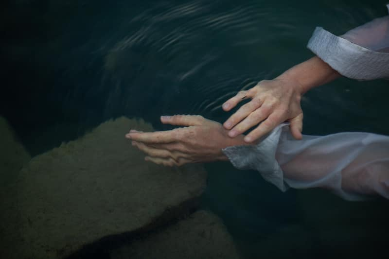
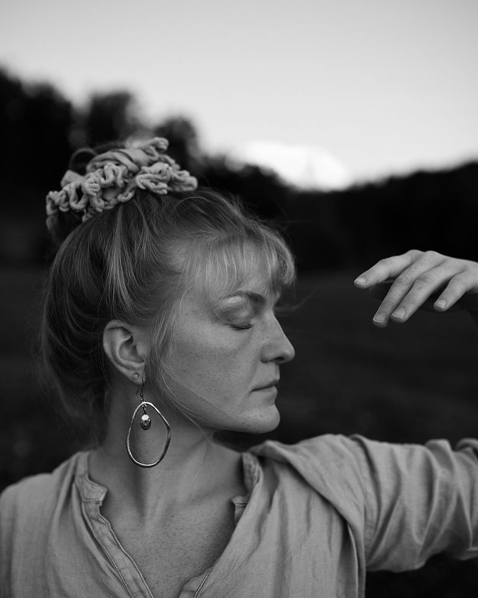
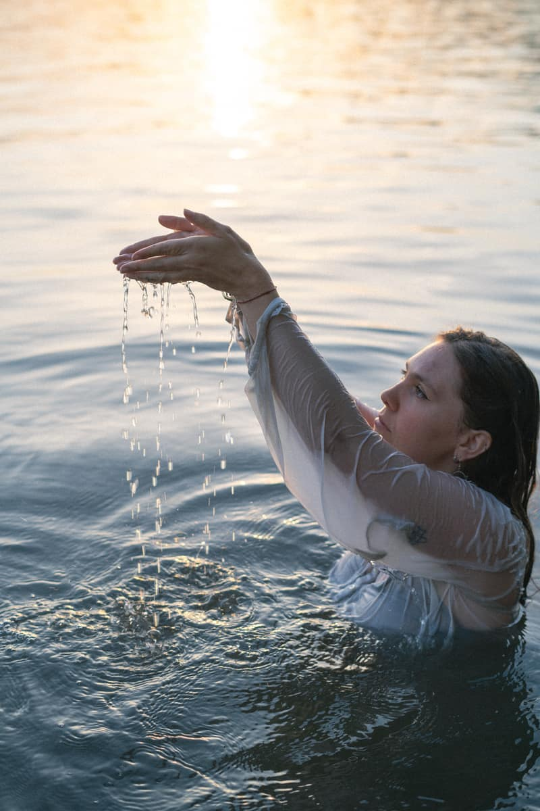
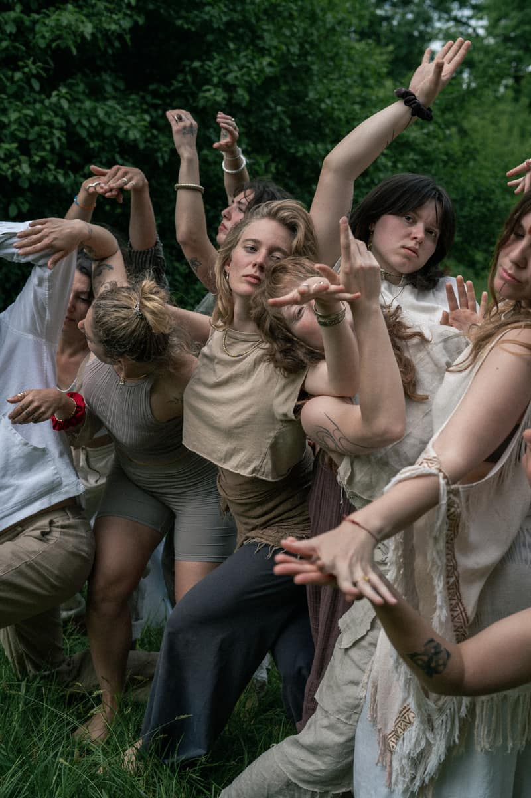
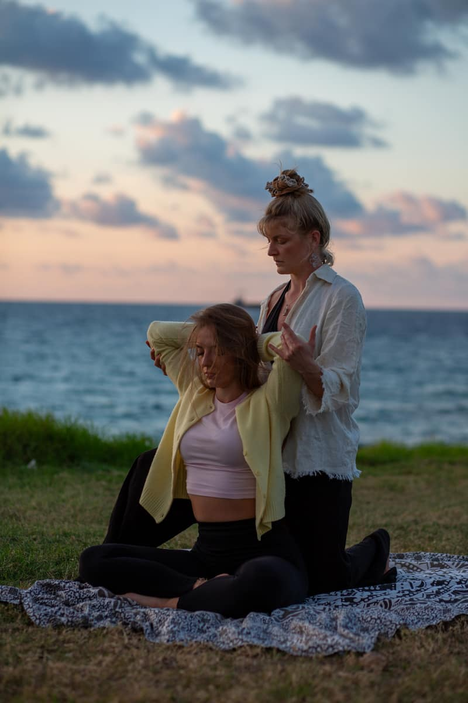
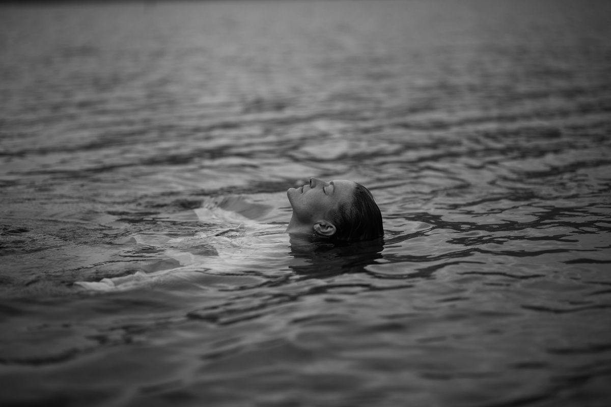
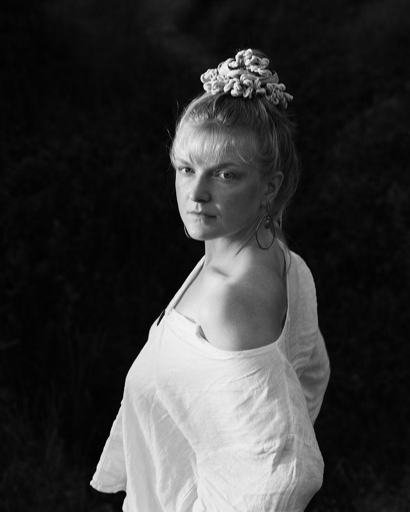

Fluid Dance · Embodiment · Luzern
Stark in der Sanftheit
Es darf leicht gehen. Du darfst fühlen. Es darf alles da sein. Fluid Dance, Embodiment und ZenThai Shiatsu mit Lucy Nicholas.
Für alle, die nicht nur tanzen, um sich zu bewegen, sondern um sich zu erinnern.
Um zu berühren, wo Worte nicht hinkommen.
Für alle, die den Puls unter der Oberfläche spüren – das Sehnen, das Wissen, das Werden.
Hier ist Bewegung ein Gebet. Hier findest du zurück zu deiner Lebendigkeit.

Angebote
Drei Wege ins Wasser

The Fluid Self · 1:1
Eine Hingabe an deinen inneren Fluss und an die Kraft, die dich bewegt. Drei Monate, online oder in Kriens.
Zum 1:1 →
Journeys & Workshops
Werde Teil einer Gemeinschaft, die sich den inneren Gewässern widmet. Für alle Levels, live in Luzern.
Nächste Daten →
ZenThai Shiatsu
Eine Einladung zum Hinhören. Auf den Körper, auf den Atem, auf die leise Sprache unter der Oberfläche.
Mehr zum Shiatsu →
„Wenn es auf diesem Planeten Magie gibt, dann steckt sie im Wasser.“ Loren Eiseley
Wer hierher findet
Für alle, die spüren: da ist noch mehr
Mehr als Schritte, mehr als Form. Für Tänzerinnen und Bewegungssuchende, die eine tiefere Wahrheit ausdrücken möchten.
Tanzerfahrung brauchst du keine, nur Neugier auf das, was sich entfalten möchte.
Die 1:1-Begleitung biete ich zurzeit für Frauen an. Workshops und ZenThai Shiatsu sind offen für alle.

Über mich
Hallo, ich bin Lucy
Lange dachte ich, ich muss mir alles hart erkämpfen. Jetzt lerne ich zu fragen: Was fühle ich eigentlich? Was ist wirklich da? Das ist auch mein eigener Prozess.
Aufgewachsen in Hamburg, heute in Luzern. Ich tanze, seit ich klein bin, unterrichte seit ich 16 bin und habe über Freestyle und Fluid Movement zum ZenThai Shiatsu gefunden.
Im Raum sehe ich Menschen sehr klar und sage ihnen, was ich sehe – immer, um sie zu stärken. Meine Einladung: Warte nicht. Durch dich passiert etwas.
Ich freu mich aufs gemeinsame Fliessen. Lucy
Stimmen
Stimmen, die berühren
Newsletter
Bleib im Fluss
Ab und zu ein Brief von mir: neue Daten, Journeys und was das Wasser gerade erzählt.